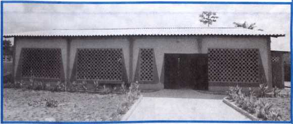

September 2002 For United States of America km-E Us 9/02 Vol. 45, No. 9
Helping Others to Glorify Jehovah
1 Avital message is being proclaimed to people throughout the earth: “Fear God and give him glory, because the hour of the judgment by him has arrived, and so worship the One who made the heaven and the earth and sea and fountains of waters.” (Rev. 14:6, 7) It is our privilege to share in that proclamation. What do people need to know about Jehovah in order to fear and worship him?
2 His Name: People need to be able to distinguish by name the only true God from the many false gods worshiped today. (Deut. 4:35; 1 Cor. 8:5, 6) In fact, Bible writers used Jehovah’s illustrious name more than 7,000 times. While we properly use discernment as to when we introduce God’s name, we should never hide it or shy away from using it. God’s will is that all mankind come to know his name.—Ps. 83:18.
3 His Personality: To glorify Jehovah, people need to know what kind of God he is. We must acquaint them with his outstanding love, superlative wisdom, complete justice, and almighty power, along with his mercy, loving-kindness, and other wonderful qualities. (Ex. 34:6, 7) They must also learn to have a wholesome fear of God, to hold him in awe, recognizing that their very lives depend on having Jehovah’s approval.—Ps. 89:7.
4 Drawing Close to God: To be saved through God’s coming judgment, people must call on Jehovah in faith. (Rom. 10: 13, 14; 2 Thess. 1:8) This involves more than simply gaining a knowledge of God’s name and qualities. We must help people develop a personal relationship with Jehovah, trusting in him with all their heart. (Prov. 3:5, 6) As they apply what they learn, turn to God in earnest prayer, and experience his hand in their lives, their faith will grow, helping them to draw close to Jehovah.—Ps. 34:8.
5 May we zealously declare God’s name and help others to put their full trust in him and to fear him. We may yet be able to help many more come to know Jehovah and glorify him as their “God of salvation.”—Ps. 25:5.
Show Appreciation for Theocratic Resources
1 When making arrangements to repair the temple, King Josiah commended those assigned to do the work, saying: “No accounting should be taken of the money with them into whose hand it is being put, for it is in faithfulness that they are working.” (2 Ki. 22:3-7) The appreciation those men had for sacred things was evident in how they handled the resources entrusted to them. Today, as we engage in the holy work of the good news of God, we likewise need to show faithfulness in handling the resources given to us.
2 In the Field Ministry: Appreciation for the vital message contained in our publications and awareness of the cost involved in producing them causes us to value them highly. We should not offer our literature indiscriminately to those who show no real appreciation for the Bible’s message. If a person shows little interest in the good news, we might offer him a tract rather than other literature.
3 Distribute literature in a way that shows regard for its value. Avoid leaving it in public areas where it will simply get strewn about. To avoid waste, take inventory of what you have on hand at home before obtaining more literature. If you regularly have a surplus of each issue of the magazines, consider reducing your order.
4 Publications for Personal Use: We should order only what publications we actually need. Especially should we be moderate when requesting deluxe Bibles, Reference Bibles, and other large publications, such as the Concordance, Index, Insight volumes, and Proclaimers book, all of which are produced at considerable cost.
5 Do you make it a point to write your name and address in your personal copies of the publications? This helps to reduce the need to obtain replacements for publications that are misplaced. If you lose a songbook, Bible, or study publication, perhaps you will And it among the lost items collected at the Kingdom Hall or assembly site.—Luke 15:8, 9.
8 Let us strive to make wise use of our literature. This is a way to demonstrate our faithfulness in handling the Kingdom resources Jehovah has entrusted to us.—Luke 16:10.
Service Meeting Schedule
Week Starting September 9 Song 209
13 min: Local announcements. Selected Announcements from Our Kingdom Ministry. Using the suggestions on page 8, have two demonstrations of how to present the September 15 Watchtower and the September 22 Awake! In each case, show a different way to handle the conversation stopper “I’m not interested in Jehovah’s Witnesses.”—See Reasoning book, pages 17-18.
17 min: “Helping Others to Glorify Jehovah.”* As time permits, mention a practical point or two in the Reasoning book, pages 196-9.
15 min: Why a Lack of Faith? Audience discussion. We often encounter people who have little faith. (2 Thess. 3:2) To reach them with the truth about Jehovah, we should first try to determine what has influenced their thinking about God. Consider the four factors mentioned in the Reasoning book, pages 129-30, that can hinder people from acquiring faith. Invite audience to suggest what approach could be used in each case. Relate an experience of an effective approach, or use the one in the August 22,1993, Awake!, pages 14-15. Song 122 and concluding prayer.
Week Starting September 16 Song 163
10 min: Local announcements. Accounts report. Encourage all to review their notes from the last circuit assembly program in preparation for next week’s Service Meeting.
18 min: How Did We Do Last Year? Talk by the service overseer. Give highlights of the congregation report for the 2002 service year. Commend everyone for the good things accomplished. Focus on how the congregation has done in meeting attendance, in return visit and Bible study activity, and in auxiliary pioneering, outlining practical suggestions for improvement. Set reachable goals for the coming year.
17 min: The Challenges Facing Single Parents. An elder interviews one or two single parents (or those whose mates are not Witnesses) to see how they cope with problems related to training, disciplining, and spiritually guiding their children. How are they able to care for family responsibilities and also get to meetings and out in field service regularly? Highlight some suggestions presented in the Family Happiness book, pages 10410. As pointed out on pages 113-15, mention practical ways that others can assist.
Song 149 and concluding prayer.
Week Starting September 23 Song 107
1O min: Local announcements. Using the suggestions on page 8, have an elder demonstrate how to present the October 1 Watchtower and have a ministerial servant show how to present the October 8 Awake! After each demonstration, restate the opening sentence or two that was used to arouse the householder’s interest.
10 min: Local needs.
25 min: “Fear God and Give Him Glory.” (Rev. 14:7) Talk and audience discussion reviewing the circuit assembly program that was held during the past service year. Invite the congregation to comment on key points learned and on how they were able to apply them personally or as family groups. (Portions can be assigned In advance.) Feature these program parts: (1) “Help New Ones to Cultivate Fear of God.” How can we assist interested ones who attended the Memorial to progress and become active servants of Jehovah? (2) “Fear of Jehovah Means the Hating of Bad.” (u)87 4/15 16-18) How can Proverbs 6:16-19 help us to turn away from things that Jehovah hates —pride, lying, materialistic pursuits, unwholesome entertainment, misuse of the Internet? (3) “Draw Ever Closer to Those You Love.” We love Jehovah, Jesus, family members, others in the congregation; how does drawing close to them safeguard us from the world? (4) “Fear Jehovah, Not Men.” How has fear of displeasing Jehovah helped you to overcome timidity when preaching, to adhere to godly principles at work or school, or to resist pressure from your employer to miss meetings, assemblies, and conventions? (5) “Do All Things for God’s Glory.” (Ps. 119:37; Heb. 4:13) Why should godly fear prevent us from drinking immoderately, viewing pornography, or practicing other concealed sins? (6) “Keep On Walking in the Fear of Jehovah.” How has Jehovah blessed you for making room for his spirit to operate fully in your life?—Ps. 31:19; 33:18; 34:9, 17; 145:19.
Song 171 and concluding prayer.
Week Starting September 30
Song 116
15 min: Local announcements. Remind publishers to turn in field service reports for September. Discuss “Kingdom Hall Construction Program Moves Ahead.”
15 min: What Makes Our Magazines Unique? Talk and audience discussion. During October we will be featuring The Watchtower and Awake! Discuss reasons why the magazines are unique: (1) They exalt Jehovah’s name. (2) They encourage faith in Jesus. (3) They proclaim God’s Kingdom. (4) They direct attention to the Bible as the final authority. (5) They explain fulfillment of Bible prophecy. (6) They explain the real meaning behind world events. (7) They show how to cope with today’s problems. (8) They appeal to people of all walks of life. (9) They stay politically neutral. Present two brief demonstrations, with each showing how one of these points can be used to start a conversation.
15 min: “Show Appreciation for Theocratic Resources.”* To be handled by an elder. Include comments on what has been observed locally and what the congregation can do to make wise use of our literature. Urge all to limit literature requests to what is actually needed. Remember the privilege to contribute financially in support of the worldwide work.—See “Share With Others According to Their Needs,” in the November 1996 Our Kingdom Ministry, page 3.
Song 21 and concluding prayer.
Week Starting October 7
Song 129
10 min: Local announcements.
(Continued on p. 7, col. 1)
© 2002 Christian Congregation of Jehovah's Witnesses. All rights reserved. Our Kingdom Ministry (ISSN 1067-7259) is published monthly by Christian Congregation of Jehovah's Witnesses; W. L Van De Wall, President; W. H. Nonkes, Secretary-Treasurer; 2821 Route 22, Patterson, NY 12563-2237. Periodicals Postage Paid at Brooklyn, NY, and at additional mailing offices. POSTMASTER: Send address changes to Our Kingdom Ministry, 1000 Red Mills Road, Wallkill, NY 12589-3299. Printed in U.S.A.
Bimbo, Bangui
Begoua, Bangui
CENTRAL AFRICAN REPUBLIC
Kingdom Hall
Construction Program Moves Ahead ,
1 In 1983 at the “Kingdom Unity” District Conventions in the United States, it was announced that a special fund would be established to support the construction and remodeling of Kingdom Halls throughout the United States and Canada. Little did we realize what blessings would result from such small beginnings. We began to experience more fully what Psalm 92:4 so aptly states: “For you have made me rejoice, O Jehovah, because of your activity; because of the works of your hands I cry out joyfully.”
2 We now rejoice greatly in what is being accomplished. Today an accelerated global Kingdom Hall construction program is under way. In one way or another, all of us have the privilege of sharing in this activity. We do so by making large or small monetary contributions to help finance the construction of more places of worship throughout the world. Many brothers also volunteer the use of their equipment as well as their time, abilities, and skills in connection with such projects. The success of the entire arrangement is due to Jehovah’s guidance, support, and rich blessing upon our united efforts.—Psalm 127:1.
3 Many branches have followed the pattern originally instituted for congregations in the United States. At Kingdom Halls in many lands, there is a box where publishers put their contributions for the Kingdom Hall Fund. In the United States, Our Kingdom Ministry for March 1997 announced an adjustment in this program. It stated: “Ever since the Society Kingdom Hall Fund was established in 1983, the brothers
—wn
have contributed generously, thus enabling loans to be made for Kingdom Hall construction. Already some 2,700 congregations in this country have benefited from this arrangement. Many congregations could not otherwise build new Kingdom Halls or renovate those in need of repair. There is now an urgent need to use some of these contributed funds to provide loans to congregations in economically depressed countries. Your continued support of this arrangement is greatly appreciated by the Society and by those congregations that benefit from your contributions.”
4 That announcement served as an in-
vitation to participate in an accelerated Kingdom Hall construction program. The Kingdom Hall Fund would be expanded to embrace the needs of our brothers in other lands while continuing to provide loans for Kingdom Hall construction in this country. A subsequent article in the August 1997 issue of Our Kingdom Ministry stated: “There is an ongoing need for Kingdom Hall construction worldwide. During just the last service year, 3,288 new congregations were formed. Many of these congregations are in Africa, Asia, Central and South America, and Eastern Europe.”
5 What have been the results since
that time? The 2001 Year-
book reported: “With this arrangement, in 30 countries, 453 Kingdom Halls have been completed thus far, and another 727 buildings are under construction. Emphasis has been placed on developing standard Kingdom Hall plans for each country that utilize local building materi
als and methods, quarried stone is used; in Togo it is common to use brick; in Cameroon concrete blocks that are later plastered are popular. In this way, local brothers are quickly able to acquire the skills necessary to ful-
In Kenya,
Mll Mil
Lyenga, Zambia—former Kingdom Hall
fill key roles within a national
program.”
6 Evidence of Jehovah’s blessings on this program can be found on the great continent of Africa. As you look over the pictures of some of the Kingdom Halls that have been built, imagine the impact that such construction has had on the work of Jeho
Lyenga, Zambia—new Kingdom Hall
Kinshasa, Congo
vah’s Witnesses! This is true
in three distinct areas—the unity of our worldwide brotherhood, the effect on the local community, and the increase in attendance at congregation meetings. While this insert highlights Kingdom Halls built in Africa, future editions of Our Kingdom Ministry will focus on how the Kingdom Hall construction program is moving ahead in other regions of the world.
Musambira, Rwanda
■ Literature offer for September: Life—How Did It Get Here? By Evolution or by Creation? October: The Watchtower and Awake! magazines. Where interest is shown, offer the Require brochure, making a special effort to start Bible studies. November: What Does God Require of Us? or Knowledge That Leads to Everlasting Life. If people already have these, an older publication may be offered. December; The Greatest Man Who Ever Lived. As an alternate offer, you may use My Book of Bible Stories, The Bible-God’s Word or Man’s?, or You Can Live Forever in Paradise on Earth.
■ The October 2002 Our Kingdom Ministry should not be distributed until after the congregation has attended its assigned district convention.
■ U.S. Selective Service regulations require that all men register at the post office within 30 days after reaching 18 years of age. A male noncitizen under the age of 26 who takes up residency in the United States must also
Service Meeting Schedule (Continued)
15 min: Taking a Stand for the Truth at School. Interview one or two young publishers who have returned to school and who realize the need to limit association with unbelieving classmates. How do they plan to deal with challenges and enticements presented by nationalistic ceremonies, school dances and rallies, extracurricular sports, and unclean conduct? Include comments about ways they plan to witness at school.
20 min: “Avoid the Pursuit of ‘Valueless Things.’”1 After discussing paragraph 4, include comments on the November 1999 Our Kingdom Ministry insert, paragraphs 30-2. When discussing paragraph 5, include comments on the box in the October 1, 1994, Watchtower, page 8. Along with paragraph 6, read paragraph 18 in the November 1999 insert. Song 105 and concluding prayer. register with Selective Service within 30 days of becoming a resident. All of those required to do so should comply with this law, viewing it as a Christian’s obligation to the superior authorities. From the time he registers until the year he turns 26, a brother must notify Selective Service of any change of address within ten days of the change. Elders should be aware of young brothers nearing the age of 18 and new alien residents between the ages of 18 and 26 and remind them of their duty to register with the Selective Service System.
■ The elders are reminded to follow through on instructions given on pages 21-3 of the April 15,1991, Watchtower regarding any dlsfellowshlpped or disassociated ones who may be inclined toward becoming reinstated.
■ The branch office does not fill individual publishers’ requests for literature. The presiding overseer should arrange for an announcement to be made each month before the congregation monthly request for literature is sent to the branch so that all interested in obtaining personal literature items may advise the brother handling literature. Please keep in mind which publications are specialrequest items.
■ Monthly editions of The Watchtower in Haitian Creole will be available beginning with the September 1, 2002, issue.
■ Monthly editions of The Watchtower on videocassette in American Sign Language will be available beginning with the September 1, 2002, issue.
■ A semimonthly edition of Awake! will be available on audiocassette in Korean, beginning with the September 8, 2002, issue.
■ At times, congregations and individual publishers face legal challenges relating to our worship of Jehovah. The booklet Defending and Legally Establishing the Good News was published in 1950 to assist with these matters. Although this booklet has been of use in the past, the legal information it presents is no longer up-to-date. Thus, individual publishers and bodies of elders should not attempt to handle legal matters on the basis of the information contained in that booklet.
■ The special public talk for the 2003 Memorial season will be given on Sunday, April 27. The subject of the talk and an outline will be an
nounced later. Those congregations having the visit of the circuit overseer or an assembly that weekend will have the special talk the following week. No congregation should have the special talk before April 27, 2003. ■ New Publications Available:
2002 Yearbook of Jehovah’s Witnesses
—Ukrainian
“All Scripture”—Authentic and Beneficial, Brochure 1 (Brochure for use in 2002 Theocratic Ministry School)
—East Armenian, Ukrainian “All Scripture”—Authentic and Benefi
cial, Brochure 2 (Brochure for use in 2002 Theocratic Ministry School)
—East Armenian
A Satisfying Life—How to Attain It
—Hindi, Malayalam, Marathi, Mongolian, Persian, Turkish
Benefit From Theocratic Ministry School Education —Arabic, Croatian, Finnish, Greek, Hungarian, Italian, Portuguese, Russian, Tagalog
Does Fate Rule Our Lives?—Or Does God Hold Us Responsible? (for Muslims) (Tract No. 71) —Czech, Dutch, Urdu
Do You Have an Immortal Spirit? (Tract No. 25) —Dutch, Marshallese, Turkish
Enjoy Life on Earth Forever! —Huave, Maya, Mazatec, Totonac, Tzeltal, Tzotzil
Isaiah’s Prophecy—Light for All Mankind II—Large Print —Spanish
Jehovah’s Witnesses—Who Are They? What Do They Believe? —Armenian, Bulgarian, Ga, Samoan, Tongan
Knowledge That Leads to Everlasting
Life —Mongolian
Life—How Did It Get Here? By Evolution or by Creation? (Small size)
—Tamil
■ New Videocassettes Available:
Respect Jehovah’s Authority—On Videocassette —American Sign Language, English
June Service Report
Av. Av. Av. Av.
Number of: Hrs. Mags. R.V. Bi.St.
Sp'IPioS. 131 120.0 105.2 52.7 5.1
Pios 85,242 62.8 44.2 20.3 1.8
Aux Pios 23,884 49.3 37.0 12.2 1.0
Pubs 851,387 9.5 8.7 3.5 0.3
TOTAL 960,644 Baptized: 4,448
What to Say About the Magazines
1 One popular means of communication today is E-mail. Although sharing personal experiences and thoughts among family and friends through this medium may be appropriate, what “valueless things” can be associated with the unrestricted use of E-mail?—Prov. 12:11.
2 Cautions Regarding E-Mail: Some claim to feel more in touch with Jehovah’s organization when they receive what they consider to be fresh information via E-mail. This may include experiences, notes on events at Bethel, reports of disasters or persecution, and even confidential information released at Kingdom Ministry Schools. Others seem overly eager to send such messages, hoping to be the first to reveal the information to their friends.
3 At times, information and experiences have been distorted or exaggerated. Or perhaps in an effort to be sensational, some have conveyed a false impression. Those who are hasty to reveal such matters often do not have all the facts. (Prov. 29:20) In some cases, even when a story is unbelievable, it is passed on as a curiosity. Such inaccurate or misleading reports amount to “false stories,” which do not promote genuine godly devotion. —1 Tim. 4:6, 7.
4 If you forward information that turns out to be inaccurate, you bear a measure of responsibility for the sorrow or confusion this can cause. When David received an exaggerated report that all his sons had been killed, he “ripped his clothes apart” in anguish. However, in truth, only one of his sons had died. That was distressing enough, but this exaggeration caused David added distress. (2 Sam. 13:30-33) Surely we would not want to do anything that would mislead or discourage any of our brothers.
5 God’s Appointed Channel: Bear in mind that our heavenly Father has an appointed channel of communication, “the faithful and discreet slave.” That “slave” has the responsibility to determine what information is made available to the household of faith, as well as “the proper time” for it to be dispensed. This spiritual food is available only through the theocratic organization. We should always look to God’s appointed channel for reliable information, not to a network of Internet users.—Matt. 24:45.
6 Internet Web Sites: We have an official Internet Web site: www.watchtower.org. This site is adequate to make information available to the public. There is no need for any individual, committee, or congregation to prepare a Web page about Jehovah’s Witnesses. Some have posted the contents of our publications with all scriptures and references given in full and have even offered copies of convention material on a donation basis. Whether profit is involved or not, the practice of reproducing and distributing publications of Jehovah’s Witnesses in an electronic document is a violation of copyright laws. While some may view this as a service to the brothers, it is not approved and should be discontinued.
’Exercising good judgment and soundness of mind when using electronic communication will ensure that our minds are filled with “precious and pleasant things of value.”—Prov. 24:4.
Watchtower sept. 15
Announcing Jehovah'S Kingdom ■
“Millions of people believe that ‘saints’ have special power and that it is good to pray through them. What do you think? [Allow for response.] Notice what Jesus Christ said. [Read John 14:6.] This makes some wonder about praying through ‘saints.’ This issue of The Watchtower discusses that important subject.”
Awake! Sept. 22
“Many today are concerned about terrorism, including the use of biological weapons. Do you think that human governments can rid this world of terrorism? [Allow for response.] The Bible shows what God has in mind. [Read Ezekiel 34:28.] This Awake! magazine examines some of the issues involved.”
Announcing jbhovah'S Kingdom
“Many have wondered if there will ever be an end to all the troubles we see around us—wars, crime, and acts of terror. What do you think? [Allow for response.] The Bible gives this comforting assurance. [Read Psalm 37:10, 11.] This magazine explains why God has not yet put an end to evil and the suffering it causes.”
Awake! Oct. 8
“Today there seems to be a dramatic increase in the number of singleparent families. The Bible shows that our Creator has compassion for them. [Read Psalm 146:9.] This issue of Awake! shows how Bible principles can help single parents to raise their children successfully.”
8
Limit introductory comments to less than a minute, and follow with a question-and-answer discussion.